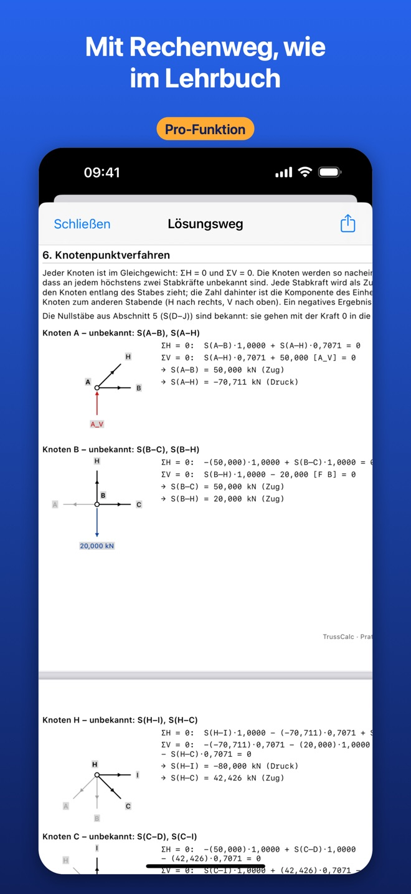

Statik lernen mit Rechenweg
TrussCalc zeigt nicht nur das Ergebnis, sondern den Weg dorthin. Zeichne ein Fachwerk, einen Träger oder einen Rahmen, setze Lager und Lasten und tippe auf „Berechnen“. Du bekommst Stabkräfte, Auflagerreaktionen und die Zustandslinien M, Q und N – und auf Wunsch den ganzen Lösungsweg auf A4, geschrieben wie von Hand und mit den Bezeichnungen deutscher Lehrbücher.


Für wen?
- Bauingenieurwesen: Baustatik I und II – Fachwerke, Durchlaufträger, Rahmen, Kraftgrößenverfahren am Träger
- Maschinenbau und verwandte Fächer: Technische Mechanik – Auflagerreaktionen, Fachwerke, Schnittgrößen, Biegespannungen
- Architektur: Tragwerkslehre – Tragverhalten sehen und verstehen
Was der Lösungsweg zeigt
- Auflagerreaktionen aus ΣM, ΣV, ΣH Schritt für Schritt (statisch bestimmte Systeme mit drei Auflagerkräften und ohne Gelenke), immer mit Kontrolle
- Fachwerke: Nullstäbe, Knotenpunktverfahren mit Freikörperbildern, Cremonaplan, Ritterschnitt
- Träger und Rahmen: Schnittgrößen als Funktionen, M-, Q- und N-Linie, Nullstellen und Extremwerte von M
- Statisch unbestimmte gerade Träger (bis dreifach unbestimmt) mit dem Kraftgrößenverfahren und der Integraltafel
- Durchbiegungen und Spannungen σ und τ im Querschnitt
Beispiel ansehen (PDF)


Kostenlos und ohne Konto
Berechnen, Zustandslinien, Ergebnistabelle, Spannungen im Querschnitt, 14 Beispiele, Balkentabelle und Integraltafel sind kostenlos. Alle Pro-Funktionen kannst du 30 Tage kostenlos testen; die Testphase endet von selbst. TrussCalc Pro ist danach ein einmaliger Kauf, kein Abonnement: Lösungsweg als PDF, Lastfälle G und Q, Eigengewicht, Bögen, Live-Modus und das Teilen von Bildern.
TrussCalc rechnet auf deinem Gerät, auch ohne Internet. Kein Konto bei uns, keine Werbung, kein Tracking.
Mehr dazu: Fachwerk berechnen · Rahmen und Träger · Cremonaplan
Nur zum Lernen. TrussCalc ist ein Lernwerkzeug. Prüfe die Ergebnisse immer von Hand oder mit anderer Software. Die App ersetzt keine Tragwerksplanung.